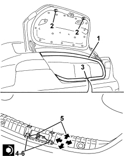
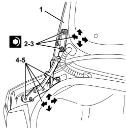

7025B10 BOOT LID - SQUARE
- Path
- Procedures > 70 FITTINGS > 7025 COMPARTMENT COVERS > 7025B BOOT LID > 7025B10 BOOT LID - SQUARE
- Kind
- repair procedure (removal / refitting; the operation number is the code)
- Applies to
- all engines; all production periods
- Interactive page
- https://sloeber94.github.io/elrnDB/alfa/159/en/#/939011214
Applies to: all engines; all production periods
- Open the boot lid.
1. Check that the boot lid seal is in place around the entire perimeter.
2. If necessary, adjust the buffers.
3. If necessary, adjust the striker position as described below.
4. Loosen the bolts fixing the lock striker.
5. Adjust the position of the lock striker using the slotted holes. The arrows indicate the possible movements for the adjustment.
6. Tighten the striker fixing bolts.
Component | Fastening | dia | Value (daNm) | Validity |
|---|---|---|---|---|
BOOT LID LOCK | Bolt | M6x16 | 0.7 ÷ 1.1 |

Applies to: all engines; all production periods
- If the adjustments indicated in the previous points are insufficient, adjust the position of the boot hinges as described below.
- Remove both lift devices.
Op. 7025B26 L/H OR R/H BOOT LID LIFT DEVICE (ONE) - R+R
1. Support the boot lid.
2. Working from both sides of the vehicle, loosen the boot lid bolts and adjust the boot lid position using the slotted holes in the hinges.
3. After adjustment, tighten the bolts to the specified torque.
Component | Fastening | dia | Value (daNm) | Validity |
|---|---|---|---|---|
BOOT LID LOCK | Bolt | M6x16 | 0.7 ÷ 1.1 |
- If necessary, adjust the lock striker position as described below.
- If the adjustment of the fastening between boot lid and hinges is insufficient, proceed as follows.
4. Working from both sides of the vehicle, loosen the bolts attaching the boot lid hinges to the body and adjust the hinge position using the slotted holes.
5. After adjustment, tighten the bolts to the specified torque.
Component | Fastening | dia | Value (daNm) | Validity |
|---|---|---|---|---|
BOOT LID HINGES | Bolt | M6x16.5 | 0.7 ÷ 1.1 |
- If necessary, adjust the lock striker position as described below.

Applies to: all engines; all production periods
- Refit the lift devices.